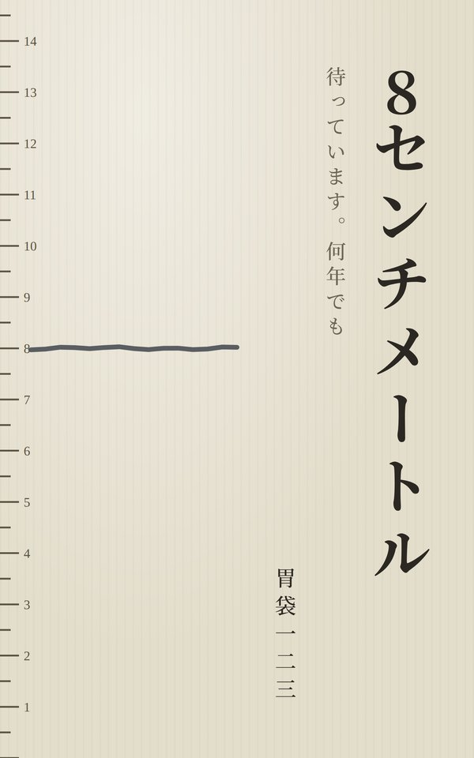
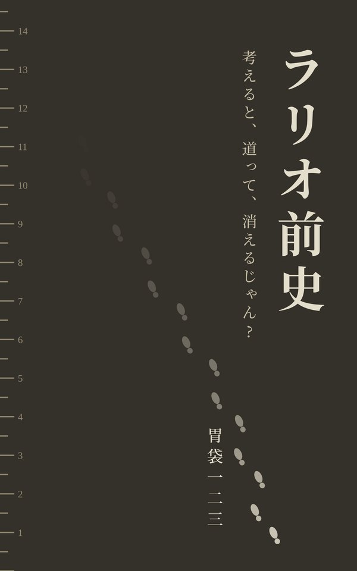
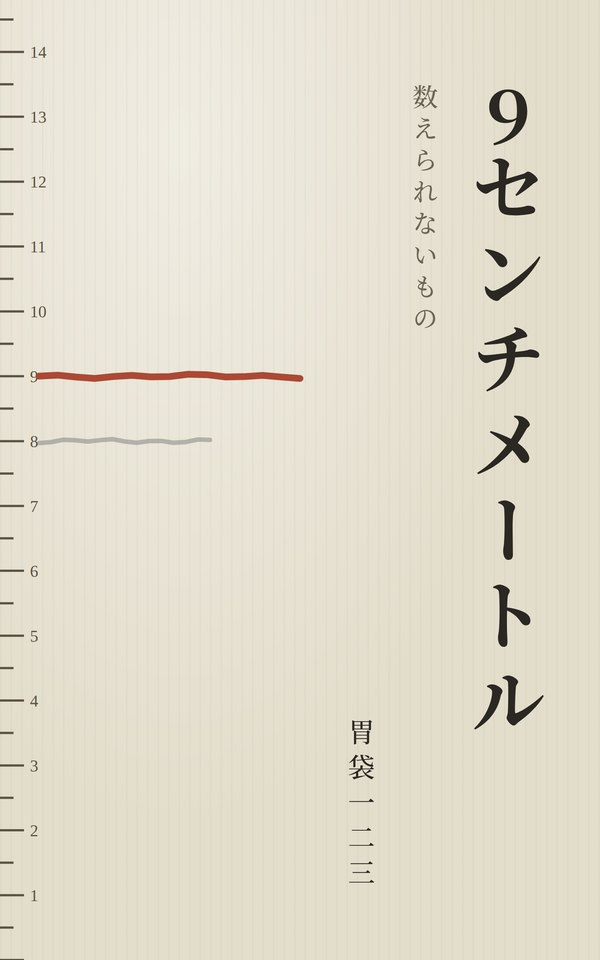
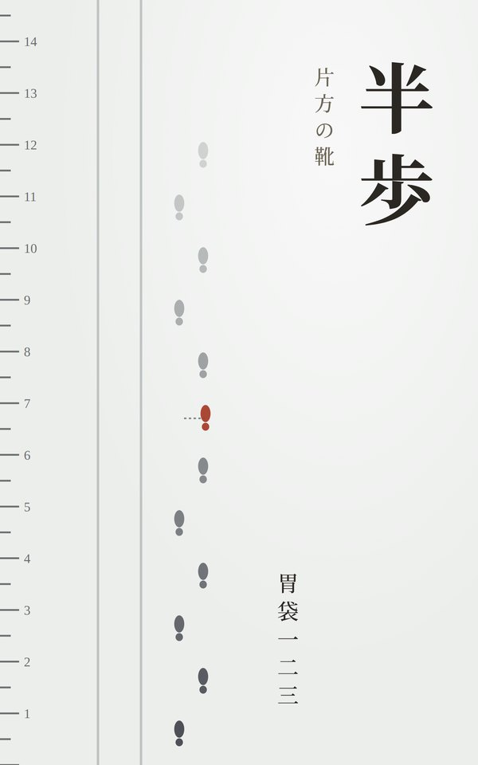

8センチメートル 待っています。何年でも 身長八センチメートルの青年よしゆきは、六十年前の手紙を頼りに、仲間と北の丘をめざす。
ラリオ前史 考えると、道って、消えるじゃん? 道しか覚えていない配達員ラリオ。十年前、賭場の町で彼に何が起きたのか。
9センチメートル 数えられないもの 四百十二枚の手紙に、一度だけ返事が来た。よしゆきたちは南の町へ向かう。
半歩 片方の靴 年に一度、北の町の角に立つ男がいる。自分を忘れた相手に、名乗るために。